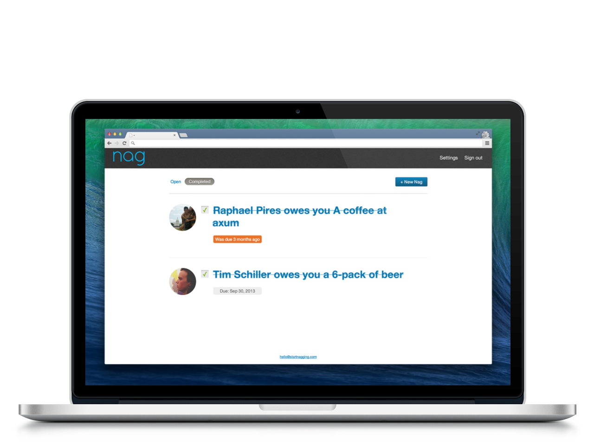

Project: Nag
Description: Best put: "Friends forget. Let's remind them.". Nag is a web application that is designed to help you in that awkward moment when your friend needs to return something that belong to you. Using Facebook's API, you can use Nag to bug them in a friendly manner. Nag was a StarterLeague project built by 5 students, and was build in two weekends during hackathons.
Role: UI and UX
Status: Launched
URL: www.startnagging.com
